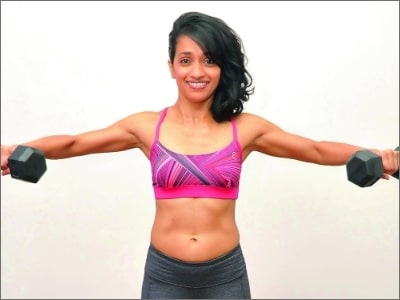
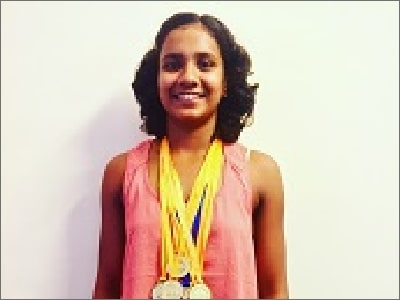
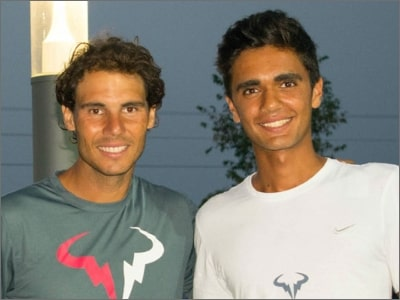
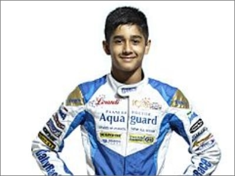
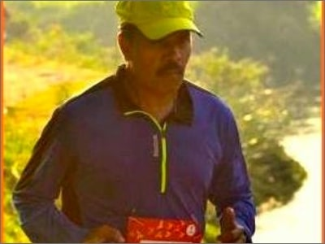
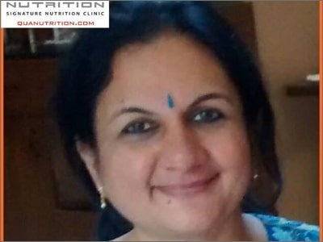

Shikhar Dhawan
Cricketer

Robin Uthappa
Cricketer

Shubhankar Sharma
Golfer

Joshna Chinappa
Squash Player

BCCI Women's Cricket Team
Cricket

K Kiran Kumar Raju
Biker

Sushil Kumar
Wrestler

Jennifer Luikham
Tennis
Supriyo Mondal
Swimmer
Trishul Chinappa
Golfer

Anju Kadam
Entrepreneur

Shwetambari Shetty
Fitness Guru

Mayuri Lingaraj
Swimmer

Anirban Lahiri
Golfer
Dinaz
Guinness Record Holder

Remya Actress
Actress

Adil Kalyanpur
National Junior Tennis Champion

Yash Aradhya
Go Karting Champion

Sneha Reddy
Tennis Player

Sachin Kumar

Aniruddha Budhya

Mr. Yegnesh

Mr. Vickram Murthy

Nirupama Surana
Mrs India World

Ananya and Taran
Shyamasree

Saroj
Madhurjya Bohra
International Triathlete

Yashaswini N V